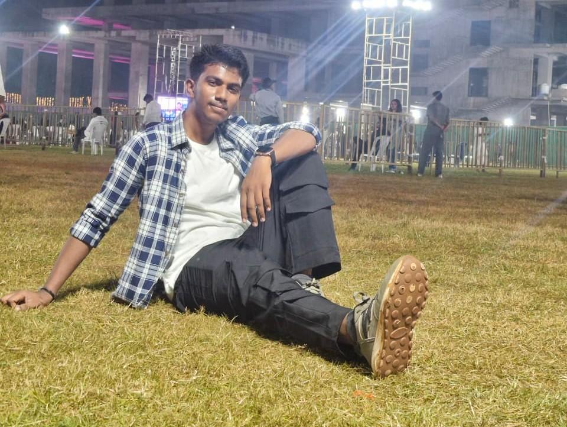

Introduction
About Me
I'm a passionate developer with expertise in creating user-friendly digital solutions. My experience spans web development, cybersecurity, and design, allowing me to bring both creativity and technical proficiency to every project.
Currently pursuing my B.Tech in Artificial Intelligent and Data Science at KL University, I'm constantly learning and exploring new technologies to become an Data Scientist.
Download Resume
